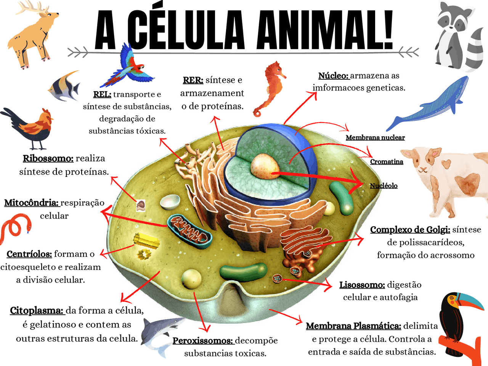

A célula animal possui uma estrutura complexa, composta por várias organelas, cada uma com funções específicas

Clique no link a seguir, para acessar o vídeo "Célula Animal - Brasil Escola". Ao clicar você será direcionado ao site do Youtube.
- Membrana Plasmática:
- Função: Delimita a célula, controlando a entrada e saída de substâncias. É composta por uma bicamada lipídica com proteínas.
- Citoplasma:
- Função: É o fluido gelatinoso onde as organelas estão suspensas. Contém nutrientes e é o local onde ocorrem várias reações metabólicas.
- Núcleo:
- Função: Contém o material genético (DNA) da célula. É o centro de controle, regulando as atividades celulares e a síntese de proteínas.
- Retículo Endoplasmático (RE):
- RE Rugoso: Possui ribossomos na superfície e é responsável pela síntese de proteínas.
- RE Liso: Não tem ribossomos e está envolvido na síntese de lipídios e no metabolismo de carboidratos.
- Ribossomos:
- Função: São as organelas responsáveis pela síntese de proteínas, podem estar livres no citoplasma ou associados ao RE rugos
- Complexo de Golgi:
- Função: Modifica, classifica e empacota proteínas e lipídios para secreção ou para uso dentro da célula.
- Lisossomos:
- Função: Contêm enzimas digestivas que degradam materiais celulares, como organelas danificadas e substâncias ingeridas.
- Mitocôndrias:
- Função: São as "usinas de energia" da célula, gerando ATP (adenosina trifosfato) através da respiração celular.
- Citoesqueleto:
- Função: Rede de filamentos que dá suporte estrutural à célula, além de auxiliar no transporte de organelas e na movimentação celular.
- Centrossomos e Centríolos:
- Função: Envolvidos na organização do fuso mitótico durante a divisão celular.
- Peroxissomos:
- Função: Contêm enzimas que degradam peróxido de hidrogênio e metabolizam ácidos graxos.
Tabela
| Organela | Função | Célula Animal |
|---|---|---|
| Aparelho de Golgi | Responsável por Modificar, Armazenar e exportar proteínas | Sim |
| Centríolos | Atua na divisão da Célula | Sim |
| Glioxissomos | Atua na Tranformação de ácidos graxos em açucares | Não |
| Lisossomos | Atua na Digestão de moléculas orgânicas | Sim |
| Mitocôndrias | Atua na respiração celular | Sim |
| Peroxissomos | Atua na disgestão de substâncias | Sim |
| Plastos | Atua no Armazenamento de substâncias e pigmentos | Não |
| Retículo Endoplasmático Liso | Atua na síntese de lipídios | Sim |
| Retículo Endoplasmático Rugoso | Atua na síntese de proteínas | Sim |
| Ribossomos | Atua na síntese de proteínas | Sim |
| Vacúolos | Atua no Armazenamento de substâncias | Não |